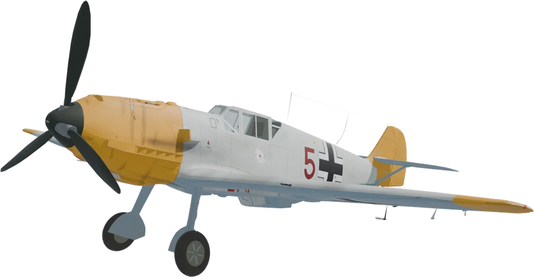
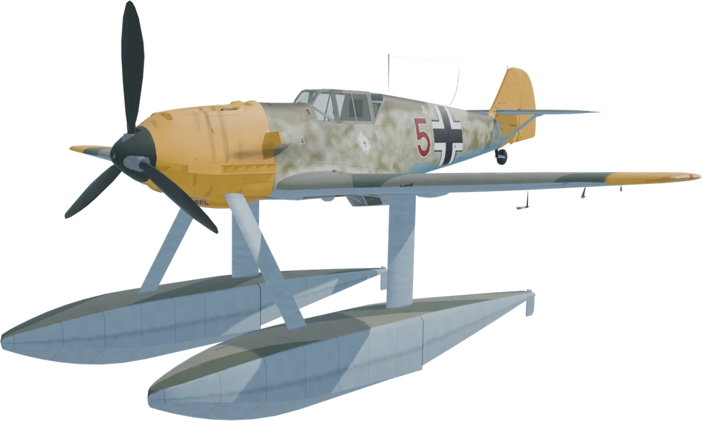
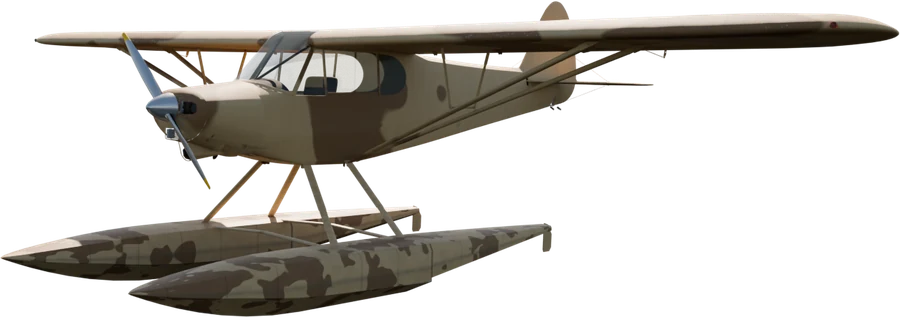

A real flight model
Every wing panel and tail surface gets its own airflow, so rolling, yawing and the stall come out of the air itself. A wing that stalls first drops and can spin the plane.
Cleared for takeoff / Chernarus
Flyable planes for DayZ, in multiplayer: a Super Cub bush plane, a Bf 109 fighter, and both of them on floats. Start the engine, take off from a field or the sea, and fly.
Version 0.3.0 for DayZ 1.30. A DayZ mod by Geb.
Preflight
DayZ has no aircraft. Each plane here is a vehicle of its own whose script flies it the way a real one flies: lift and drag on every wing panel and tail surface, a propeller with its torque and slipstream, sprung wheels or floats, an engine and fuel. No car underneath, and the same on the server and the pilot's machine.
Every wing panel and tail surface gets its own airflow, so rolling, yawing and the stall come out of the air itself. A wing that stalls first drops and can spin the plane.
Thrust that falls off with speed, torque that rolls the plane, a corkscrew slipstream on the fin, and on the 109 the propeller's gyroscopic kick.
Each wheel rides a spring and grips up to its load. The tailwheel steers on the pedals, toe brakes help you turn, and a Cub braked too hard noses over.
Each float is simulated in slices: buoyancy, planing on the step, the hump of the takeoff run, water rudders, spray and the sound of the water. Swim up and climb in.
Start them with the start action, run them on their own tanks, refill them from a jerrycan. A crash damages the engine or the airframe where it hits.
Fifteen German instruments with moving needles, a stick, pedals, throttle and flap wheel that move, gear lamps, and an inertia starter you hear wind up.
The pilot's controls ride in DayZ's own vehicle network moves, and every force goes through its deterministic physics, so the server and the pilot fly the same plane.
Every plane in three paint schemes: the 109s whitewashed or in tropical sand and olive, the Cubs in white and grey or sand and brown, the floats to match.
The hangar
Two planes, each on wheels and on floats, and each in three paint schemes. Click a classname to copy it.
Bush plane
The 150 hp two-seat tandem bush plane on fat tundra tyres. It takes off from a field and lands slow. It flies like a real one: it stalls, it can spin, it swings on the takeoff run, and in a crosswind it wants to weathervane. The split door folds open, the passenger rides behind you, and the main wheels come off like car wheels.

Fighter
The single-seat fighter of 1940: a 1,175 PS DB 601 on a constant-speed propeller, retractable gear on G, flaps on a handwheel and slats that slide out by themselves near the stall. Fifteen German instruments, a canopy that swings over, an inertia starter, and its own engine sounds. No guns yet.

Floatplane
The E-3 on twin floats, flown from the sea and the lakes, its gear folded away for good. Hold the stick back over the hump, let it plane on the step, and it comes off the water at about 170 km/h. Water rudders on the pedals for taxiing. A wreck's floats flood and it sinks.

Floatplane · Arcade
The easy one. The keys turn it at a steady rate and the plane flies itself: let go and it levels its wings and holds its height, hold A or D and it banks into a turn without rudder, hold S and it climbs. It can't stall or spin, lifts itself off the water at full throttle and lands itself with the throttle closed.
Pilot's notes
The keys are the same for every plane, and all of them can be rebound under Settings > Controls > Geb's Aircraft.
| Key | Does |
|---|---|
| W / S | Stick forward (nose down) / back (nose up) |
| A / D | Roll left / right |
| Z / C | Rudder left / right, which also steers the tailwheel and the water rudders |
| Shift / Ctrl | Throttle up / down. The lever stays where you leave it |
| X / R | Flaps down / up a step |
| Page Up / Page Down | Trim nose up / down |
| Space | Wheel brakes |
| G | Landing gear up / down (Bf 109 E-3) |
| Hold the start action | Start the engine; click it to stop |
| Hold F | Get in or out, anywhere near the cockpit: the door or canopy opens by itself |
Hold the start action until it fires; it needs fuel and an engine that isn't ruined. Standing still with the throttle shut, the brakes hold it. Open the throttle a little to roll and steer with Z and C: the tailwheel steers, and at a crawl the rudder also brakes the wheel on that side.
Half flaps (one press of X), full throttle, and keep it straight with the rudder as it speeds up. Hold S: the stick stops short of the stall by itself, and it lifts off at about 90 km/h and climbs away. Left alone, it flies off at about 105 km/h with half flaps.
It climbs at about 5 m/s, cruises at 160–180 km/h and tops out around 200. Clean it stalls at about 74 km/h, 69 with full flaps. Pull too hard and a wing drops.
Full flaps, about 80 km/h on the approach, throttle to idle over the field. Touch down on all three wheels and brake gently: a Cub braked hard noses over onto its propeller.
Stand by the left side of the cabin with a jerrycan of fuel and look up under the wing root. The tanks hold 136 L.
Stand near the cockpit, on either side or on the wing, and hold F: the canopy opens by itself. Hold the start action: the inertia starter's flywheel winds up for three seconds, engages, and the engine fires about four seconds after you began. Close the canopy before you go.
Half flaps (two presses of X). Open the throttle smoothly over a few seconds and keep it straight with taps of rudder, not long presses. Leave the ailerons alone until the tail is up. At about 100 km/h ease the stick forward to bring the tail up, nose just above the horizon; around 150–160 km/h ease back and it flies off after about 390 m. Don't take off on full flaps.
G once you're climbing. Best climb is about 270 km/h at 16 m/s; it cruises at 350–400 and tops out around 480 low down. Held S pulls steadily and stops short of the stall. It stalls at about 145 km/h clean, 130 with full flaps.
Gear down (the green lamp) and full flaps below 250 km/h. Approach at 170–180 km/h and hold off to a three-point touchdown at about 140. The brakes are strong and the gear narrow: steer with the rudder and brake gently.
The filler is on the left side behind the cockpit, by the yellow triangle. The tank holds 400 L, about an hour at full power.
It sits about half a metre deep, the propeller well clear. There are no brakes on the water: at idle it creeps along at about 6 km/h, and the rudder keys turn the water rudders up to about 45 km/h. Climb in from a jetty, the shallows, or swimming alongside.
Half flaps, hold S and open the throttle all the way. The bow rises over the hump at 30–40 km/h; from about 60 km/h it's up on the step, and holding S eases to the planing attitude by itself. It comes off at about 170 km/h, some 850 m and 35 s from the start. Use the sea or a big lake.
Slower and heavier than the E-3: about 400 km/h flat out and 9 m/s climb. Everything in the cockpit is the E-3's; there's no gear to work.
Full flaps, 165–170 km/h on the approach, throttle to idle. Touch down a little nose up, sinking slowly, hold that attitude while it runs on the step, and ease back below about 90 km/h. Coming down too hard damages it, and a propeller in the water drowns the engine.
On this one the keys ask for a turn, and the plane does the flying. W / S pitch at a steady rate while held; let go and it eases back to level flight. A / D bank up to 60°; let go and the wings roll level. You don't need the rudder in a turn.
On the water, open the throttle all the way and let go of everything. It gets up on the step and lifts off by itself at about 110 km/h, some 18 s later. Hold S as it goes and it's off sooner and climbs away. Z and C turn it on the spot on the water.
Hands off, it flies straight and level at any throttle; the throttle sets the speed, up to about 200 km/h. Hold S to climb at about 5 m/s, hold D to turn about 20° a second. It can't stall or spin.
Close the throttle and let go. It slows to about 85 km/h and settles onto the water, wings level. Holding S for the last few metres makes it softer.
Ground crew
Choose the player path for local use or the server path for a community server. The Workshop is the authorized distribution source.
Open Geb's Aircraft on Steam and select Subscribe.
Wait for the DayZ Workshop download to finish before starting the launcher.
The official DayZ launcher can load the server's Workshop mods for you.
Subscribe with the server's Steam account, or fetch the Workshop item with your usual SteamCMD workflow.
Place the mod folder beside the DayZ server executable, and copy its .bikey file into the server's keys folder.
Load the mod in your server's startup command, on the server and every client.
-mod=@gebsaircraftdb/types.xmlThe planes have no spawn points of their own (nominal 0): you place them with an admin tool, or give them an event at your airfields. Paste their rows inside your <types>; the spare main wheels spawn as industrial loot. The whole file has every plane, scheme and wheel.
<type name="GebsPA18_Yellow">
<nominal>0</nominal>
<lifetime>3</lifetime>
<restock>1800</restock>
<min>0</min>
<quantmin>-1</quantmin>
<quantmax>-1</quantmax>
<cost>100</cost>
<flags count_in_cargo="0" count_in_hoarder="0" count_in_map="1" count_in_player="0" crafted="0" deloot="0"/>
</type>cfgspawnabletypes.xmlSo a Cub or a Bf 109 the economy spawns comes on both main wheels. The floatplanes need nothing.
<type name="GebsPA18_Yellow">
<attachments chance="1.00">
<item name="GebsPA18_Wheel" chance="1.0" />
</attachments>
<attachments chance="1.00">
<item name="GebsPA18_Wheel" chance="1.0" />
</attachments>
</type>Spawn a plane with your admin tool: the Cub and the Bf 109 on open ground, the floatplanes on the water or in the shallows. A new plane comes with half tanks. In COT, spawn it with the health at full (1200) or left empty: a health of 0 gives you a ruined plane whose engine never starts.
Use a Steam Collection to distribute the required mod to your players.
Reference
All public classes, for spawning, trader lists and loot tables. Click a name to copy it.
| Classname | Type | Description |
|---|
No classnames match that search.
Troubleshooting
Stand anywhere near the cockpit, look at the plane and hold F: the door or canopy opens by itself. Then hold the start action until the engine fires. It needs fuel and an engine that isn't ruined; if it won't fire, the script log says why.
That's a taildragger: keep it straight with taps of rudder, keep a little back stick early on so the tail stays down, and brake gently. The Super Cub on floats is the easy one if you'd rather not.
On the sea or a lake. They can't take off from land, where they rest on their floats. Spawned under the water, they come up by themselves.
Not yet. The server and each player's machine keep their own copy of the weather, and a plane flown on two different winds drifts apart between them, so the planes leave it out for now.
Yes. It contains models, textures, sounds, scripts and the controls, so it must run on the server and all clients.
No. It needs no other mod.
Planes before 0.2 were cars underneath and are saved differently; delete them on the server before updating, and spawn new ones.
No. Subscribe to the authorized Workshop release and use a Steam Collection for your server's mod list.
Logbook
What changed in each release.
gebsaircraft: its folder, PBO prefix and paths. Classnames, keybinds and saved planes are the same.First release: the Piper PA-18 Super Cub, its flight model, controls, moving surfaces, door and paint.